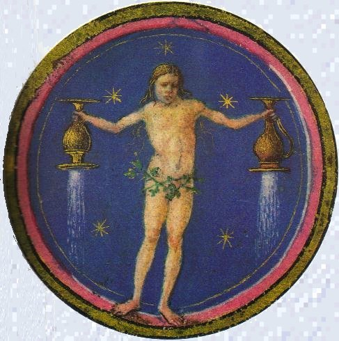
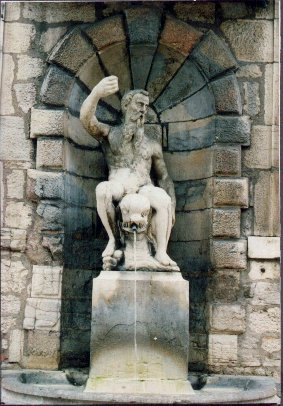
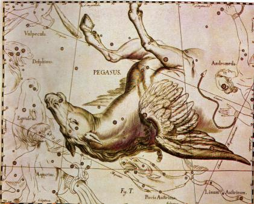
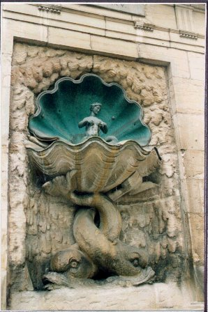
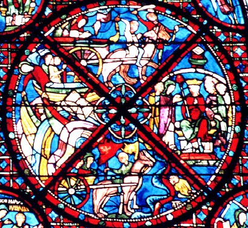
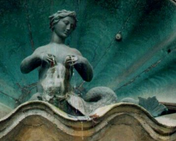
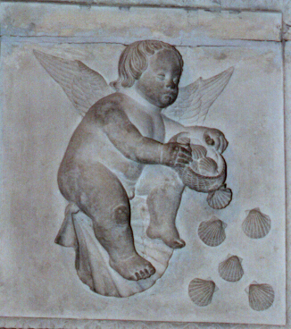

Emblema XL.
revu et corrigé, le 6 février 2003
Ex duabus aquis, fac unam, & erit aqua sanctitatis.
(Des deux fontaines fais-en une seule : ce sera l’eau de sainteté.1)
D’une gorge limpide sort une double source :
En l’une est la tiédeur d’une urine d’enfant,
Mais la seconde est fraîche : on la nomme eau de Vierge.
Donne-leur même cours en unissant leurs ondes :
Ce ruisseau mêlera les vertus des deux sources,
Comme de Jupiter Ammon
La fontaine est chaude et glacée2.
Les prodiges opérés par les eaux sont si grands et si nombreux qu’un gros volume pourrait à peine les contenir ; divers auteurs en ont traité en des endroits variés. Mais on célèbre par-dessus toutes les autres les deux eaux philosophiques, en affirmant d’elles que non seulement elles les égalent mais qu’elles les surpassent toutes par leurs propriétés et leurs pouvoirs. Le Sybaris, l’Axus de Macédoine, le Mêlas de Béotie sont des fleuves qui rendent noirs les troupeaux qui boivent de leurs eaux3. Par contre le Crathis, le Clitumne de Mévanie et le Céphise les font passer de la couleur noire a la blanche4. Les eaux de Sinuesse en Campanie mettent fin à la stérilité de l’un et l’autre sexes. Le fleuve Afrodisius rend les femmes stériles5. La source Caburc en Mésopotamie possède une eau à l’odeur agréable. L’eau d’Anygrum dans le Péloponnèse dégage une forte puanteur. La source de Jupiter Hammon devient tour à tour froide le jour, chaude la nuit, tiède le matin et le soir. Sans nous attarder aux autres, disons que les eaux des philosophes procurent tous les effets, même les plus contraires les uns aux autres. Lulle en parle au Livre de la Quintessence (3e distinction : incération) :
" Ainsi il y a dans l’art, dit-il, une double considération : il faut réaliser, à partir de la nature d’un seul métal, deux liquides de composition contraire ; l’un aura une vertu qui fixe, coagule et durcit, l’autre sera volatil, instable et mou. Ce second liquide est durci, fixé, coagulé par le premier. De ces deux liquides il sort une pierre coagulée, fixe et durcie, qui possède le pouvoir de coaguler ce qui n’est pas coagulé, de durcir ce qui amollit et d’amollir ce qui est dur. "6
Ces paroles font apparaître la nature de ces deux eaux et pourquoi il faut les réduire en une seule. La pierre est en effet appelée eau parce qu’elle fond, et inversement l’eau est dite pierre parce qu’elle broie. Ces eaux sont amenées de divers endroits, moyennant parfois un long parcours, comme on peut le voir à Rome aux alentours de l’Eau de la Vierge et d’autres fontaines artificielles, et il faut ensuite les faire confluer et se mêler pour que, de deux, elles deviennent une seule. Si en effet la vertu de l’une est chaude et celle de l’autre froide, elles acquerront des vertus mixtes si on les mélange, et leurs pouvoirs se tempéreront de façon admirable. De là naîtront des eaux médicinales et thermales très efficaces qui combattront les maladies et les affections de toutes sortes et ramèneront l’homme à une santé vigoureuse.7
La nature, il est vrai, combine et mélange dans le sein de la terre, par son art secret des compositions, des eaux en grand nombre avec les vertus de divers minerais8 ; ces eaux procurent ainsi la santé à de nombreux malades ; mais la composition sera beaucoup plus efficace si, en outre, l’art et le régime convenables interviennent, si l’on procède au préalable aux évacuations et au reste, et si l’on mélange entre elles les substances à mélanger. Bien qu’artificielle en apparence cette composition est purement naturelle, car elle est une chose unique, simple, homogène faite à partir d’éléments divers, impossible à réaliser par l’art. Sans l’aide de la nature, à vrai dire, l’art n’opère que brouillamini et confusion, mais non une union véritable et naturelle que seule la nature réalise. La thériaque comprend le mélange artificiel de divers simples ; elle s’obtient en broyant et en faisant fermenter, mais personne n’affirmera sans témérité qu’elle est une composition naturelle et encore moins un médicament homogène. Il est assuré que, si l’on mélange des substances artificielles, elles ne pénètrent pas les unes dans les autres par leurs parties les plus ténues, bien que l’industrie humaine ne puisse pas les distinguer et les séparer de nouveau. Mais on veut examiner, à propos du mélange de toutes les qualités, si les premières thériaques de tous les simples ont été transformées en une seule quintessence ou si elles demeurent encore dans leurs poussières ou leurs substances, comme les accidents dans le sujet ou la couleur sur le mur ; et ensuite ce qu’il faut dire des qualités secondes, troisièmes et quatrièmes. Il est probable que toutes les qualités continuent d’adhérer à leurs sujets propres et qu’elles n’entrent pas en composition entre elles selon un mélange naturel. S’il en était autrement, les qualités abandonneraient leurs corps, les quintessences seraient quatre dans tout composé artificiel, correspondant ainsi au nombre des classes de qualités, premières, secondes, etc. ; elles seraient alors sans leurs corps et séparables ; mais il n’en va pas ainsi.
Les auteurs écrivent, à propos du coagulum du lièvre, que dans le cas d’un flux provenant de la ténuité du sang, il l’arrête et, en quelque sorte, coagule le sang. Au contraire, lorsqu’il y a coagulation et présence de caillots, il ouvre la voie au sang et le fait couler. Ainsi le vinaigre, le plomb et beaucoup d’autres corps peuvent opérer de façons opposées suivant la diversité des usages, car la nature a réalisé de tels admirables mélanges. Ainsi également l’eau philosophique possède des vertus variées et contraires, car la nature en a opéré le mélange à partir de contraires, avec l’assistance de l’art, et elle en a fait une substance indivisible qui n’est rien d’autre que la quintessence par rapport aux autres substances qui doivent lui être mélangées9.
Notes1. Il est question ici de deux fontaines. L'une est de vertu minérale, et l'autre, de vertu métallique. L'affaire consiste à les mixer en forme d'eau salée. Cette eau paraît, aux dires des alchimistes, avoir des propriétés singulières : celle, en particulier, de coaguler certains sels qui y auront été préalablement dissous, sous forme de cendres. Mais cette coagulation, loin d'être passive, serait des plus actives, en ce sens qu'il s'y manifesterait tout à la fois croissance et multiplication. Bref, tout concourt à faire croire que cette eau permet, tel un ferment, de faire lever la pâte, en sorte que l'Artiste assiste, émerveillé, au spectacle de la Nature accomplissant en quelques jours ce qu'elle met en principe des millions d'années à achever. Plusieurs arcanes sont couverts sous un seul secret. D'abord, l'arcane métallique ; puis l'arcane minéral. Enfin, le mystère de la préparation de l'eau de sainteté, qu'E. Canseliet préfère appeler « eau benoîte ». Ayant à de nombreuses reprises traité ce sujet de plusieurs manières, nous aborderons le problème sous un angle semblable à celui qui nous a satisfait à l'Atalanta, XXXVIII quand il s'est agi d'aborder Mercure et Vénus. C'est donc en poursuivant notre parcours du zodiaque hermétique que nous entamerons l'explication de cet emblème XL.
2. C'est bien sûr de signes doubles qu'il est question ici, outre que le symbolisme se rattache aux fontaines par la mythologie et la légende. Le signe des Gémeaux qui se rattache à Mercure est ici hors d'oeuvre. C'est donc les deux signes du Verseau et des Poissons qui retiendrons d'abord notre attention.
Onzième signe du zodiaque tropical, le soleil le parcourt du 20 janvier au 18 février. Son maître naturel est Saturne [mais les astrologues, sans d'ailleurs aucune certitude de preuve, n'ont pas eu scrupule de faire d'Uranus son second maître. Nous avons parlé de cela dans nos études astrologiques]. La tradition en fait un signe d'AIR, là où par notre système réformé, nous en faisons un signe d'EAU. Il s'agit de toute façon - à l'instar des Poissons - d'un signe mutable, dans lequel il n' y a pas beaucoup de problème à percevoir un caractère dual : il exprime son attachement atavique au Mercure des Sages. Le Verseau est bien visible, culminant au méridien vers 22 h dans la première moitié du mois d'octobre. La zone d'espace occupée par la constellation est vaste : elle est bordée par les Poissons, Pégase, le Petit Cheval et le Dauphin au nord [c'est-à-dire en direction de la Grande Ourse, ce qui est une indication de choix pour le pilote de l'Onde vive]. L'Aigle et le Capricorne le longent à l'ouest, le Poisson austral et la Baleine à l'est.

FIGURE I
(le Verseau, bréviaire d'Este, Bibliothèque Estense, Université de Modène, Italie)La figure I montre tout à fait cette dualité et fait voir ces deux fontaines dont nous parle Maier, mais aussi de façon plus générale, tous les grands hermétistes : Fulcanelli [Mystère des Cathédrales], Basile Valentin [l'Azoth], Artéphius [Livre Secret], etc., nous enseignent que l'eau coule de deux grosses roches qui figurent les matières premières des Sages. Et quand il ne s'agit pas de fontaine à proprement parler, les alchimistes les figurent en forme de montagnes, ce qui est tout aussi suggestif : Limojon de Saint-Didier [Lettre aux Vrais disciples d'Hermès, Triomphe Hermétique], Georges Aurach [planche I du Donum Dei], etc., montrent que l'Artiste aura besoin de deux matières. Ces matières ne sont point sous forme liquide et c'est là un des nombreux Travaux d'Hercule qui va échoir à notre Artiste, d'abord d'élire les matières, de les sortir de leur minière, puis de les dépurer en leur faisant adopter une forme saline porphyrisée, et enfin de les mixer avec le glaive de feu que nous voyons au Livre des Figures Hiéroglyphiques. Les astrologues n'ont point accordé à ce signe d'exaltation ou de point de chute astrale. Toutefois, certains y voient le lieu d'exil du Soleil ce en quoi on peut être d'accord si on comprend qu'il s'agit d'une éclipse passagère, dans la mesure où le temps de la conjonction des principes a eu lieu. Aussi bien, tout se passe-t-il comme si le Verseau était le signe d'une accalmie dans la tempête déchaînée préalablement par la coexistence des contraires. L'idéogramme montre une double onde qui rappelle singulièrement la double roue du feu de roue que contemple l'Artiste, las mais satisfait d'avoir franchi les roches cyanées qui signalent l'envol de la colombe d'Eurysthée et la sortie du Pont-Euxin. L'étoffe de ce signe paraît donc fluide, légère, volatile tout en étant aqueuse, c'est-à-dire fluide comme de l'eau, toute de limpidité spirituelle dirions-nous, signe d'une parfaite coction où l'alchimiste n'a qu'à suivre la hampe verticale de l'emblème qui figure sur l'écusson central de la cheminée du château de Fontenay-Le-Comte. Tout comme dans l'étude du Taureau et des Gémeaux, nous diviserons l'analyse du Verseau selon ses décans.
1)- le premier décan montre une conque marine, aux volutes gracieuses et équilibrées ; elle déverse une eau limpide et fraîche, portant en tout point la bienfaisante vertu de son irrigante et féconde action dont l'Artiste doit user avec largesse. C'est cette eau que les alchimistes ont nommé le Lait de Vierge [34 occurrences, cf. recherche]. Aussi bien est-ce, par un faux paradoxe, dans le signe du Verseau plutôt que dans le signe de la Vierge, que cette eau fraîche doit être mentionnée. Notons en premier lieu le trait de cabale entre l'onde fraîche [yucoV] et l'âme [yuch]. Ce trait permet de comprendre le mode d'action du Lait de Vierge, qui consiste à ramener les ombres [âmes] de l'Enfer, ou ce qui revient au même, qui va assurer - par maturation - le retour des cendres. En second lieu, l'allusion à la conque, c'est-à-dire de façon plus générale à la coquille [à la Renaissance, on voulait dire la grande coquille renversée formant la partie supérieure d'une niche], ou encore au cul-de-four, est d'une grande banalité pour l'alchimiste qui sait très précisément quelle est la fonction nourricière de ce calcaire et quel rôle il joue dans les phénomènes de cristallisation [cf. sections sur le Métamorphisme des roches, avec des exposés de Gabriel-Auguste Daubrée et d'Achille Delesse]. Cette conque, par parenthèse, est plus connue comme trompe d'appel, où son emploi se généralisa dans l'Antiquité [on dit parfois qu'elle transmet la voix des dieux, ce qui est bien comprendre, par le verbe, le concept hermétique qui est voilée sous cette allégorie d'un ésotérisme léger]. En grec, la conque [kogkh] désigne aussi bien la coquille, le vase en forme de coquille pour puiser l'eau [mais non pas, notez-le bien le vase des philosophes, en forme de verre, le rappel étant formulé d'ailleurs, non par nous mais bien par Michel Maier qui, dans l'emblème, nous redonne l'image de la prison de verre qu'il nous avait déjà fait voir dans l'Atalanta, IX.]
D'ailleurs, cette action d'aller « puiser » l'eau, c'est-à-dire d'aller au puits, ne nous fait pas sortir de notre sujet [cf. Philosophia Reformata, de Mylius sur la valeur symbolique du puits] et l'allusion est bien connue des pots qui vont au puits, où le pot de terre s'oppose au pot de fer, donnant lieu à une scène magistrale, qui est très exactement exprimée par un des tableaux de pierre du Mystère des Cathédrales. [cf. Gobineau de Montluisant où nous reprenons l'analyse des Vices et des Vertus gravées au portail central de Notre-Dame de Paris].
Mais, pour revenir décidément à la fonction de la conque dans l'oeuvre, la voici exprimée par le mot kogculh, qui désigne un coquillage d'où l'on tire la pourpre. L'étudiant ayant quelque teinture de science comprendra sans rappel et comme on dit : peu de paroles suffisent au sage... Passant donc outre ce point de science - certes capital, mais traité déjà maintes fois - nous ajouterons que la conque se signale non seulement par sa matière mais encore par sa forme, conchoïdale, qui rappelle le profil d'un fût de colonne. Que dire sur cet aspect en spirale ? Sinon qu'il dénote évidemment une forme circulaire en évolution où l'on peut voir une version moderne - par rapport à la Chrysopée de Cléopatre - du serpent Ouroboros. Si l'on veut en rester à la définition primitive, mais ô combien suggestive, de la conque, il nous semble qu'elle ne peut s'appliquer qu'à celle de la coquille Saint-Jacques, si connue, du pèlerin de Compostelle [littéralement formé du compost philosophal, c'est-à-dire du Mercure préparé, et de l'étoile qui signale la blancheur : anqos monoV par laquelle on définit la stibine hermétique ou véritable Stibium de Tollius, en un mot l'albâtre des Sages, c'est-à-dire la seule étoile, le sceau étoilé -]. Cette spirale se retrouve souvent dans le symbolisme hermétique et exprime, de fait, par les ammonites, la matière même de la conchoïde. Or, par un hasard assez remarquable, cette elix signale tout autant les possibilités de nature de ce matériau extraordinaire qu'est le calcaire saccharoïde [matière protéiforme sur laquelle nous avons déjà glosé dans le Mercure de Nature]. Ce n'est pas tout. Selon Fulcanelli, il constitue une indication majeure sur le Déluge, qui s'est au sens propre du terme incarné dans la fable de Deucallion et Pyrrha, et de ce Déluge, seule l'Arche de Noë devait subsister, avec en son sein, le renouvellement, non seulement du genre humain, mais aussi de tous les autres animaux.
On pourrait évoquer, comme exemple, le char de Thétys, conque d'une forme merveilleuse et d'une blancheur d'ivoire nacré. Quand elle parcourt son empire, ce char, traîné par des chevaux marins plus blancs que la neige, semble voler à la surface des eaux. Ce qu'il faut bien comprendre ici, c'est que le cheval est véritablement à la croisée des Éléments. Associé aux ténèbres du monde chthonien, il semble placé sous la domination de Pluton [en fait, Ploutos]. Ce dieu représentait la personnification divine de la fécondité de la terre, le garant de l'abondance des récoltes et on lui donnait le nom de Dis Pater, « père des richesses ». Il ne devient dieu des Enfers qu'à dater du Ve siècle av. J.-C. ; on le connaît aussi comme un fleuve charriant de l'or. Galopant comme le sang dans les veines, le cheval parcourt ainsi les entrailles de la terre et peut être assimilé à la substance source - ou mère - de la minéralisation, minière des minéraux vils et nobles comme des pierres gemmes. Il tient à la fois de l'eau, de la vapeur surchauffée sous pression, et tient en dissolution les germes nécessaires à la maturation des cristaux. En résumé, cette conque possède son propre moteur, symbolisé par les chevaux du char de Thétys. Et Thétys [ThquV] elle-même joue là-dedans un rôle de premier plan : son nom signifie « nourricière » et elle est un symbole de la fécondité des eaux. On peut ainsi mesurer l'étendue de son action dans l'élaboration de la Pierre qui se joue dans l'eau de notre dissolvant, à la fois eau ignée et feu aqueux. Elle régit aussi la bonne marche des sources et des fontaines.

FIGURE II
(la fontaine des Carmes, XVIe siècle : Neptune chevauchant un dauphin.
Oeuvre de Claude Lullier, Besançon - cliché Alain Mauranne)2)- le deuxième décan montre un mammifère aquatique au corps souple, qui glisse doucement sur les ondes. Il fait mille grâces qui captivent le regard et font oublier aux impétrants que tout ce qui brille n'est pas d'or. Ce décan constitue le dauphin de l'oeuvre. La figure II montre que ce mammifère nécessite une commande : aussi voit-on Neptune tenir à la laisse le dauphin, en véritable pilote de l'onde vive. Rappelons que le dauphin [37 occurrences, voir en recherche] signale à l'Artiste le début de la coagulation de l'eau mercurielle. Il figure en bonne place dans l'une des planches du Mutus Liber. Son nom est sujet à la cabale : deljiV est proche de DeljoV [Delphes et son oracle], de deljinh [dragon gardien de l'oracle de Delphes], et enfin de deljinion [temple d'Apollon Delphinios à Athènes]. Ainsi cet animal apparait-il comme tenant à la fois de l'AIR [c'est un mammifère] et de l'EAU [mobilis in mobile], promesse [oracle] du futur Soufre réincrudé [Apollon]. Ajoutons à cela que Delphes était considéré par les Anciens comme l'omphalos [le nombril du monde] et que cette petite ville de Phocide s'appelait Pytho, à l'époque d'Homère. Nous n'insisterons pas outre mesure sur le symbolisme, riche d'enseignement mais traité ailleurs, entre Pytho et le serpent Python, monstre engendré sur l'ordre d'Héra. Le mythe rejoint ici de façon merveilleuse la science hermétique. Qu'on en juge : lorsque Héra apprit que Léto était enceinte des oeuvres de Zeus [une autre version de Léda et du cygne, cf. Atalanta, XXV], elle demanda à la terre d'enfanter un monstre, Python [qui n'est autre que le Mercure philosophique], chargé de poursuivre Léto sans relâche. On connaît deux autres versions de cette légende : dans l'une, c'est Dircé qui traite Antiope - alias Léto - avec une telle cruauté que Zéthos et Amphion la tuent et l'attachent aux cornes d'un taureau sauvage : ils la laissent sans sépulture en un lieu d'où jaillit une source appelée plus tard « la fontaine de Dircé ». Dans l'autre, c'est Niobé qui se vantait devant qui voulait bien l'entendre, de sa fécondité et de la beauté de ses enfants, et qui se moquait de Léto [Latone] qui n'avait donné le jour qu'à Apollon et Artémis. Indignés d'une telle présomption, les enfants de Latone se vengèrent en tuant ceux de Niobé à coups de flèches. Seule, une fille leur échappa mais sa frayeur fut telle qu'elle garda une pâleur mortelle qui lui fit donner le nom de Chloris [pâle]. Ce n'est pas tout : sortant de son palais et asisstant impuissante au « massacre des Innocents », ses enfants, elle fut comme pétrifiée. Pris de pitié, Zeus la changea en rocher, d'où coulèrent ses larmes sous la forme d'une source [notez par parenthèse que cette source est la deuxième que cite Maier, mais nous en parlerons plus tard]. D'autres légendes circulent dans lesquelles Apollon et Artémis défendent Latone contre le géant Tityos, et contre le serpent Python.
Quel est le point commun à toutes ces légendes ?a)- D'abord Latone est le principe de croissance de la Pierre dans le Mercure. Mais Latone n'est pas le Mercure.
- Dans un premier temps, Héra, jalouse de Léto, fit en sorte que toutes les terres lui refusent l'hospitalité afin d'accoucher : nous y voyons la phase de putréfaction du magistère et la victoire, momentanée du volatil sur le fixe pour d'évidentes raisons. Héra [Hra] forme par cabale la partie pontique du dissolvant [elle est fille de Kronos et de Rhéa, d'ailleurs anagramme de Héra. Elle exerce une action toute puissante sur les phénomènes de vertu céleste qui se déroulent dans l'oeuvre. La différence entre elle et Zeus réside en ceci qu'elle manifeste sa puissance par la tempête lorsqu'un élément de corruption est présent. En effet, elle incarne le type même de la sainteté conjuguale, de l'union parfaite et de l'épouse, à la fois chaste et fidèle. Sa sainteté et sa pureté l'opposent absolument au caractère volage qu'on prête à Zeus, qui lui permet, néanmoins, de développer une action de « promotion » dans le développement minéral du magistère. Ce n'est pas, certes, que Zeus soit un agent corrupteur - loin de là - mais la nature même des âmes auxquelles il prête vie - par ses liaisons avec Léda, Latone, Io, etc. - leur donne l'empreinte de la corruption. Celle-ci cesse néanmoins, au moment de l'incarnation de l'âme dans le corps, mystère que les alchimistes ont voilé sous le terme de réincrudation et traité par l'allégorie des pluies d'or s'abattant sur Rhodes] dont Zeus forme l'autre partie.
- La malheureuse Léto erra durant des mois de terre en terre, ne pouvant se fixer. Elle parvint enfin en vue d'une parcelle de terre qui flottait sur l'eau : Ortygie [les cabalistes hermétiques ont traité ce point et certains l'ont traduit d'une manière un peu facile en : « l'or y gît », se référant par là à Grasset d'Orcet dont, il faut bien l'avouer, nous ne compremons pas bien l'art...]. De notre côté, nous trouvons que cet îlot flottant mérite mieux qu'un calembour facile. Ortygie [Ortugia] est l'ancien nom de Délos dont nous avons parlé dans la section des Gardes du Corps. On peut en rapprocher ortux qui désigne la caille, mais aussi le plantain, c'est-à-dire l'herbe à puces [yulloV], qui explique pour partie la présence du chien qui se gratte de l'emblème XVIII. Voyez sur le sujet Fontenay. L'infortunée Léto souffrit neuf jours et neuf nuits avant de mettre au monde Apollon et Artémis [qui l'assista d'ailleurs lors de la naissance d'Apollon, Artémis symbolisant le Soufre blanc]. Le chiffre 9, dernier de la série, annonce à la fois une fin et un commencement : début du départ du Mercure dans le Ciel et fin de la période de sublimation pour le Soufre qui devient enté. C'est aussi 3 x 3 qui exprime les trois oeuvres dans le magistère et les trois principes de l'Art.
- C'est alors qu'Ortygie fut fixée au fond de la mer par quatre colonnes et que la végétation [comprenez la Pierre] commença à percer la croûte aride de son sol : elle prit alors le nom de Délos qui signifie « la Brillante. ».b)- Tityos, Python, Niobé ou Dircé expriment le même symbolisme : celui d'un agent de destruction qui n'est autre que le Mercure. Le parallèle est nettement affirmé pour Dircé [la Fontaine de Dircé] et le serpent Python pour d'évidentes raisons.

FIGURE III
(extrait de l'atlas de Hevelius)3)- le troisième décan du Verseau : l'image représente Pégase, ce pur coursier ailé, piaffant et renâclant, plein d'une idéale ardeur, toujours prêt à s'envoler vers le séjour des Immortels. Il offre sa puissante protection aux Sages qui ont des lutte sacrées et utiles à soutenir. Il montre, au vrai, l'esprit au service de la création et constitue assurément l'un des meilleurs facteurs de réussite dans la voie suivie par l'Artiste. Sur Pégase, nous avons déjà dit bien des choses [31 occurrences, cf. recherche]. Il serait né aux sources de l'Océan et on a vu qu'il formait, avec Chrysaor un sel double nécessaire au travail. Bellérophon l'aurait trouvé buvant à la source Pirène [Peirhno], ce qui signifie, en considérant que la racine peirh est la même que peira, que Pégase constitue la pointe de l'épée de feu utile à l'Artiste pour attiser son dissolvant. C'est une sorte de nuée, porteuse d'eau féconde, analogue en cela à l'égide et qui paraît dépendre de Zeus, en ce qu'il est porteur du tonnerre et de la foudre pour le prudent [avec le sens de pensée grave, de pensée balancée. Que l'étudiant s'avise qu'en ce moment de l'oeuvre, il ne doit pas verser dans l'orgueil parce qu'il a vu Iris, sous peine de rompre ses vaisseaux]. Quoi qu'il en soit, selon certaine sources, d'origine phénicienne, Pégase serait synonyme de « figure de proue ». La figure III montre que, curieusement, Pégase est représenté « à l'envers ». Cette anomalie, que les mythographes n'ont pu expliquer, est aisément compréhensible aux cabalistes qui savent qu'au moment opportun, l'ensemble du composé doit être renversé, comme l'enseigne le feu de roue, figure pétrée de Notre-Dame de Paris, où Fulcanelli fait bien voir qu'il y a deux roues entrelacées. Si nous reprenons l'écusson central de la cheminée alchimique du château de Fontenay-Le-Comte, on voit que la hampe verticale du 4 est suivie de l'hypoténuse du triangle inscrit dans le chiffre. Si nous tenons compte que les cabalistes attribuent à ce côté du triangle la valeur du dieu Horus, il devient évident que le calorique ne peut plus être imposé au 4ème degré de feu, mais que la manifestation du Soufre [du Soleil, assimilé à Horus, hiéroglyphe du Soufre rouge, c'est-à-dire période de temps où la réincrudation opère] nécessite une décroissance de la température, dont les degrés sont l'un des secrets les plus réservés de l'oeuvre. On les symbolise habituellement par l'escalier des Sages en feignant que l'escalier doit être monté au lieu que, le Mutus Liber est formel sur ce point, les anges musiciens annoncent que les marches doivent être descendues. Ainsi, comprend-on que le grand problème dans l'oeuvre n'est point la mort, mais bien la résurrection... Aussi bien le symbolisme de Pégase, tout en jouant sur l'eau, les fontaines, se ressent-il de la promesse d'une terre ferme, comme l'affirme du reste, l'hiéroglyphe du 2ème décan du Verseau. La forme même de la constellation de Pégase, un carré, s'avère conforme à la logique hermétique et s'inscrit dans le droit fil d'une tradition éprouvée.
Quant à Bellérophon, il apparaît dans le magistère comme une imitation d'Hercule. Il est opposé, dans la légende, au roi Iobatès qui lui commande des travaux. On retiendra évidemment qu'il parvint à capturer Pégase en lui passant des rênes [le loup de la grande tradition, lupus, c'est-à-dire le frein] et qu'il dut la vixtoire contre la Chimère [le symbole du premier Mercure, celui qui est cité comme le « vinaigre très aigre »] grâce à Pégase. Mais Bellérophon se montre par la suite trop ambitieux et, à l'instar d'Ixion, finit en Enfer, pour avoir trop voulu approcher du Soleil. En effet, seul Zeus peut déclencher la pluie d'or en profitant du sommeil d'Héra. Ce mythe ne semble pas avoir inspiré nos Modernes [cf. Introïtus, I ; St-Grégoire-sur-Vièvre]. On trouve, toutefois, un passage où Bellérophon est mentionné dans les Demeures Philosophales [mais son nom n'apparaît pas dans le lexique] lorsque Fulcanelli commente le caisson n°8 de la 4ème série du grimoire de la galerie de Dampierre-sur-Boutonne, portant l'image du bouclier. Voici ce passage :«...A moins qu'il ne préfère recourir au moyen dont se servit Bellérophon, chevauchant Pégase, pour tuer la Chimère. » [DM, II, p. 119].
Le contexte dans lequel l'Adepte évoque Bellérophon n'est pas évident. Il parle du dragon qui garde le verger des Hespérides, indication toutefois que le 3ème oeuvre est déjà bien entamé. Il poursuit par ces mots qui nous rappellent le sort de Bellérophon :
« Vaincre ou mourir, tel est le sens voilé de l'inscription. Notre champion, malgré sa vaillance, ne saurait donc agir avec trop de prudence, car l'avenir de l'Oeuvre et son propre destin dépendent de ce premier succès. » [DM, II, p . 119]
Nous nous devons, ici, de manifester notre perplexité au lecteur car il ne peut s'agir de la première opération. Nous suggèrons que Fulcanelli veut parler de l'opération par laquelle la couleur de paon se manifeste et qui correspond à la conjonction des natures métalliques. C'est ici que nous prendrons congé du 11ème signe zodiacal, non sans avoir rappelé divers points, pour mémoire :
- point 1 : Maier parle du Verseau dans l'Atalanta, III et note bien le caractère métallique que l'eau a acquis à cette période de l'oeuvre ; nous laissons le lecteur se reporter à cette section ;
- point 2 : Esprit Gobineau de Montluison, dans son EXPLICATION TRÈS CURIEUSE DES ENIGMES ET FIGURES HIEROGLYPHIQUES...écrit que :« Les signes du Verseau et des Poissons sont mis hors d'œuvre ; c'est expressément pour faire connaître qu'aux deux mois de janvier et février, on ne peut avoir, ni recueillir la matière universelle »
ce qui est un demi mensonge puisque, si la préparation du Mercure n'intéresse pas ces deux signes, en revanche, il s'agit des époques où l'on recueille les Soufres.
- point 3 : cette hypothèse semble corroborée par cet extrait de l'article Zodiaque du Dictionnaire de Pernety :
« Le Lion est l'exaltation de Mercure, et le Verseau sa déjection »
On ne saurait mieux dire. Mais on omet de dire qu'il s'agit de la déjection du Mercure qui se vide, en quelque sorte, du soufre qui y a été préalablement concentré. [cf. notre zodiaque alchimique.]
- point 4 : Pernety nous dit que Vénus est le lieu d'exaltation de Vénus. C'est une erreur : les astrologues considèrent - mais pour des raisons qui semblent à rattacher seulement à l'Art sacré, et qu'ils ignorent - que Vénus est exaltée dans les Poissons. En revanche, les astrologues considèrent que le Verseau est le domicile d'Uranus, la première planète moderne découverte depuis l'Antiquité. On représente d'habitue Uranus comme un vieillard accablé qui médite profondément. On sent que l'esprit veut dominer la matière et il en résulte des actes qui sont déconcertants pour ceux qui regardent et souvent imprévus, dans leurs conséquences, pour l'Artiste. Peut-être est-cela que Fulcanelli avait en tête dans le passage que nous avons cité supra.
Douzième signe du zodiaque, les astrologues en font un signe d'eau. Nous ne sommes pas d'accord avec eux et préféront pour des raisons exposées ailleurs [cf. notamment prima materia] y voir un signe d'air. Quoi qu'il en soit, ce signe, comme le précédent, est dual et affirme sa nature double, féconde. C'est la maison zodiacale de Neptune [pour le cabaliste] et certains y voient la maison annexe de Jupiter ; Vénus y est en exaltation et le Mercure en chute, ce qui est conforme. Les poissons sont très présents dans le symbolisme alchimique : ce sont les hiéroglyphes du Soufre, et il y en a deux ; un pour le Soufre blanc, l'autre pour le Soufre rouge. On n'en finirait pas d'énumérer le nombre de gravures ou d'extraits de textes relatifs à l'animal marin. Jean d'Espagnet, toutefois, se démarque une nouvelle fois dans la littérature, et en a restitué dans sa complexité et sa totalité, l'ésotérisme. C'est aussi les Poissons qui nous permettent d'analyser pleinement le mystère contenu dans l'expression de l'épigramme de Maier : « En l’une est la tiédeur d’une urine d’enfant [...] »

FIGURE IV
(fontaine des Dames, Besançon. En souvenir de la Chapelle de l'Immaculée conception ;
oeuvre de Bertrand et de Breton - cliché Alain Mauranne)Cette magnifique fontaine nous restitue en sa pureté l'exotérisme qui se dissimule, lourdement chargé, sous les Poissons. Quatre parties peuvent être analysées dans ce monument : les Poissons entrelacés, qui rappellent ainsi leur origine mercurielle ; voyez que leurs têtes quasi-reptiliennes signalent également leur atavisme ; puis la grande mérelle où se devine l'onde vive, accusée par les plis où s'aperçoit un soulèvement mettant à jour ce qui était auparavant caché, c'est-à-dire les profondes formations « métamorphisées ». Au vrai, il s'agit de nos Soufres désormais réincrudés, modelés par les actions conjointes de Zeus, Poséïdon et Protée. Le Rebis enfin, symbolisé par l'union du cygne [Zeus] et de Léda. Notez que ce point de science a déjà été traité dans l'Atalanta, XXV lorsque nous avons examiné le riche contenu hermétique de la cheminée sise à Avignon, dont M. Alain Mauranne a su capter la signifiance alchimique. Nous allons examiner en détail ces symboles.
- le premier décan des Poissons montre une image qui représente deux fuyants poissons qui, sur un champ d'eau glauque et sombre, semblent échanger de mystérieux signaux. Ils manifestent, dans cet aspect à la fois primitif et élémentaire, la dernière trace du Mercure commun [le vinaigre très aigre du début] qui se ressent - spirituellement parlant - de la tromperie, de la médisance et de la mauvaise foi [esprit fuyant, comme notre Atalante, fugitif, versatile, lunatique]. C'est dans le chapitre 54 que Jean d'Espagnet a montré sa science d'hermétiste de haut vol :« Les philosophes ont aussi leur Mer, où s'engendrent de petits poissons gras, qui brillent en écailles d'argent : si l'on sait les prendre et les envelopper dans un filet délié, on sera tenu pour un pêcheur très expert » [Oeuvre Secret d'Hermès]
Cette citation résume à peu près tout le 3ème oeuvre. C'est donc à la capture des poissons, c'est-à-dire à leur fixation totale, qu'il faut s'atteler. Un secon extrait de D'Espagnet achève de nous édifier quant au but poursuivi dans cette opération :
« Mais la première opération pour parvenir au rouge se commence dans la seconde maison de Vénus, et la dernière se termine au second tribunal royal de Jupiter, de qui notre Roi très puissant recevra une couronne tressée de très précieux rubis. » [cap. 137, Oeuvre Secret]
Nous parlerons en son temps de la seconde maison de Vénus et, pour l'heure, c'est le second tribunal de Jupiter qui retiendra notre attention. Il peut paraître paradoxal d'associer à l'élément AIR le signe des Poissons, rattaché à l'élément EAU. Hors mis de très courts instants où certains poissons volants voient la lumière du soleil, le poisson meurt dans l'air. Toutefois, il est obligatoire que ce signe zodiacal soit lié à l'AIR. Tous les bons auteurs, en effet, insistent sur ce fait, remarquable, que leur Pierre naît dans l'élément aérien, lié il est vrai au FEU. L'Atalanta, XXXVI est formelle à cet égard. C'est donc par cabale qu'il faut comprendre cela, faute de quoi on casserait le fil d'Ariane qui nous permet de sortir de la chambre centrale du labyrinthe... Le poisson est associé à la naissance ou à la restauration cyclique, ce qui nous avise de mouvements de convections qui affectent la surface de l'eau mercurielle, désormais empâtée : la manifestation se produit à la surface des eaux et c'est par là qu'il faut comprendre le signe d'AIR. Le poisson représente le 2ème instrument de la Révélation à l'Artiste, rouge celui-ci, le 1er étant blanc. C'est le lieu d'évoquer la figure christique [cf. retable d'Issenheim] qui a été tant employée dans les allégories des Adeptes. L'eau du baptême [cf. saint Jean Baptiste] est l'élément naturel des Chrétiens, qui se nomment de « pauvres pêcheurs » et il est significatif que cette ablution s'opère dans l'instrument consacré à Thétys, la conque. Le poisson s'avère le grand symbole de la vie et de la fécondité, en raison de sa faculté unique de reproduction et du nombre infini de ses oeufs : au vrai, chaque oeuf de poisson représente chaque goutte de la pluie d'or qui s'abat sur Rhodes, au moment de la réincrudation. Dom Pernety a consacré un chapitre entier [cap. VII, livre 2] de ses Fables Egyptiennes et Grecques au mythe des pluies d'or. Voici un extrait qui en dit long là-dessus :
« La matière fixe ou l’or Philosophique, qui après s’être volatilisée retombe alors en forme de pluie, a donc pris avec raison le nom de pluie d’or ; sans cette pluie l’enfant Hermétique ne se formerait pas. » [Fables, cap. VII, liv. 2]
C'est par voie sèche que cela doit s'entendre. Et la volatilisation est une sublimation dans le Mercure, qui sert au Soufre tout à la fois de nourrice et de véhicule. Danaé et la pluie d'or, Léda et le cygne, etc. voilà des fables qui expriment la parturition et de là, la conception et la croissance de l'embryon hermétique. C'est sans doute, ce symbolisme entrelacé que l'Artiste a voulu exprimer dans cette belle fontaine de la figure IV. Les légendes orientales ou des Indiens d'Amérique sont d'accord avec le sens général du poisson envisagé comme double : dans l'ancienne Asie Mineure, Anaximandre précise que le poisson est le père et la mère du genre humain ; ailleurs, on le trouve associé au rhombe, notamment sur des cylindres babyloniens. Selon les légendes d'Egypte, les êtres divins de Busiris se métamorphosent en Chromis, ce qui commande une abstinence totale de poissons. Nous allons développer un peu le sens de cette dernière allégorie. Ces êtres divins représentent bien sûr les anges, chacun porteur d'une part d'âme et nous avons vu dans l'Atalanta, XXXVII que l'urine d'ange était assimilable à la rosée de mai, d'où l'allusion de Maier à : « la tiédeur d’une urine d’enfant ». On feint que c'est Busiris qui a fondé Thèbes, la ville du Soleil alors que nous savons qu'il s'agit de notre héros, Cadmos. Voyez ce qu'en dit Pernety :
« Busiris, fondateur de cette ville, était fils de Roi, par conséquent Philosophe instruit de l’Art Sacerdotal ; il était même Prêtre de Vulcain. L’entrée en était défendue aux étrangers. Ce fut sans doute une des raisons qui engagèrent les Grecs à décrier si hautement ce Busiris, le même dont il est fait mention dans les travaux d’Hercule. » [Fables, Rois d’Egypte et Monuments élevés dans ce pays-là.]
Busiris [BousiriV] est chargé de cabale. On peut décomposer ce nom en BouV et IriV. Le 1er terme renvoie au boeuf Apis [les Egyptiens adoraient ce Bœuf, parce que l’âme d’Osiris, après sa mort, passa dans le corps de cet animal, et de celui-ci dans ses successeurs. D’autres racontent qu’un certain Apis ramassa les membres épars d’Osiris tué par Typhon, les mit dans un Bœuf de bois, couvert de la peau blanche d’un Bœuf, & que pour cette raison on donne à la ville - Thèbes - le nom de Busiris.] et le 2ème à l'airain, forme évoluée du Rebis [Electre est mère, d'Iris, petite-fille de Pontos et de Gaïa]. On complètera le sens du nom de Busiris par l'article qu'y consacre Pernety :
Busiris Roi d’Égypte, tuait et massacrait ses hôtes. Hercule le vainquit et le tua. Ce Busiris, selon les Alchimistes, est le soufre incombustible et les impuretés qui enveloppent la vraie matière de la pierre, et la tiennent comme dans un état de mort. L’Artiste détruit par le feu ces impuretés, et en délivre par ce moyen l’Égypte, qui représente la terre philosophique. D’autres expliquent cette fable différemment. Busiris, selon eux, est pris pour le mercure philosophique, dont l’activité des esprits dissout, putréfie, et donne, pour ainsi dire, la mort à tous les métaux avec lesquels on le mêle. L’Artiste dans les opérations de la pierre philosophale, fixe et coagule ces esprits mercuriels.On voit que notre version diffère quelque peu de celle de Pernety. Au lecteur de décider laquelle se rapproche le plus de la vérité hermétique. Voyons à présent le cas de Chromis [dans lequel on peut reconnaître CromioV]. On en connaît plusieurs. C'est d'abord un poisson de mer [cromis]. Dans la mythologie, trois Khromios ont été identifiés : un fils de Nélée, le fils de Priam, un Troyen et un Lycien. Le symbolisme attaché à Nélée est riche d'enseignement hermétique. Nélée est fils de Poséidon et de Tyro [il semble que Tyro - Turw - ait connu exactement le même sort que Latone ou Antiope : elle fut cruellement traitée par sa belle-mère, Sidéro. La malheureuse jeune femme s'éprit d'un amour sans espoir pour le dieu-fleuve Enipée, dont Poséidon revêtit la forme pour pouvoir la séduire ; deux jumeaux naquirent de cette union, Pélias et Nélée, qui furent abandonnés sur l'ordre de Sidéro. Plus tard, les deux frères délivrèrent leur mère de sa marâtre]. En outre, Tyro désigne le peuple de la mer Rouge. Cela dit, Nélée épouse Chloris, une fille d'Amphion, qui lui donne Chromis. Voit-on la relation ? Nous avons évoqué Chloris à propos de Niobé. Chloris [ClwriV] est la seule des filles de Niobé qui fut épargnée par Apollon et Artémis quand ils vengèrent le sort de leur mère. Son nom est proche de clauroV [d'un vert tendre, comme les jeunes pousses] qui évoque le Lion vert, premier état du Compost. Quant à Chromis, il indique la couleur qui tient au Corps de la Pierre [euphonie entre CromioV et crwma]. Il indique la qualité et la forme du Soufre rouge qui a probablement été employé par Fulcanelli lorsqu'il a découvert la pierre philosophale. Voyez sur le sujet la section du Soufre. Et si Fulcanelli n'a pas existé - ce qui semble très probable - nous reporterons nos vues du côté de Jacques-Joseph Ebelmen, Henri Sainte-Claire Deville et Edmond Frémy. Ce Soufre, Fulcanelli ne pouvait le nommer sans enfreindre la loi de silence qu'il s'était imposée ; E. Canseliet fit de même. Aussi se servirent-ils des riches églises [cf. Gobineau] aux vitraux polychromes [krwmatikoV, qui concerne les ornements du discours, qui concerne la chromatique - cf. vitraux de Bourges] où ils purent employer, pour décrire leurs matières, un crayon de plomb [crwzo, que les alchimistes voilèrent sous l'épithète de plomb des Sages] en jouant, par ailleurs, sur des assonances spécieuses, du genre crwzo - crusoV [le métal or, dont tous les textes font voir qu'il en faut employer la forme spirituelle et non la forme corporelle qui ne peut servir de rien] qui achevèrent d'induire les mercantis en confusion.

FIGURE V
(cathédrale de Bourges ; cliché Alain Mauranne)Aussi nos alchimistes modernes eurent-ils beau jeu d'utiliser, à l'instar des traités lapidaires, les décors polychromes de nos belles églises. Ce superbe vitrail a le mérite, en outre, de présenter la lettre qui, selon Fulcanelli, apparaît à la surface du Mercure, c, signe que sa préparation a été canoniquement effectuée. C'est le sceau étoilé dont l'Adepte écrit :
« Cette devise, présentée à la manière d'un rébus, - Seule Y - manifestait la science de son possesseur par le signe caractéristique de l'oeuvre, l'unique, la seule étoile. » [Mystère des Cathédrales, p. 174]Cette étoile, nous en avons parlé plus haut, n'est autre que l'antimoine saturnin, bien connu des Adeptes. Assez sur ce sujet.
Pour dire le vrai, le poisson a inspiré une très riche iconographie chez les artistes chrétiens. Nous voulons parler de la scène où, s'il porte une corbeille de pain, ou s'il se présente lui-même sur un plat, le poisson représente l'Eucharistie, sacrement qui contient le corps, le sang, l'âme et la divinité de Jésus-Christ sous les apparences du pain et du vin. Or, que représente d'autre le compost philosophal qu'un mélange du vin des Sages et de la pâte de levain, fermenté par le Lait de la vierge... S'il était besoin d'ailleurs, ce serait un motif supplémentaire de consacrer aux Poissons l'élément AIR [dans lequel se meuvent l'Esprit de Dieu et l'Âme du Christ, auxquels on peut attribuer l'épithète du FEU] au lieu de l'EAU, reliquat du Mercure en voie désagrégation.- le deuxième décan des Poissons représente l'image d'un cygne majestueux, à la démarche ondoyante et à l'oeil trompeur ; il s'avance vers l'objet de son désir amoureux [Léda] et passager [Zeus est volage] qui ne durera guère plus longtemps que le tracé fugace que laisse son sillage sur le lac qu'il traverse. Ce décan présente les traits de l'instabilité de l'esprit, signe du Mercure vacillant et en passe de volatilisation, qui témoigne de l'effort fourni dans la réincrudation du Soufre. Aussi, Délos étant la promesse d'une terre sûre, ce décan constitue le gage d'un facteur de vitalité et, surtout, de longévité. Tout cela, nous le retrouvons dans la vasque ou mérelle de la fontaine des Dames, où un magnifique cygne s'apprête à féconder Léda. Vous remarquerez que de ses seins sourd une eau dont la forme est désignée par la couleur, verte, de la mérelle, tandis que sa qualité est celle de l'onde blanche et fraiche, que les alchimistes ont appelé le Lait de Vierge.

FIGURE VI
(Léda et son cygne, détail de la figure II ; cliché Alain Mauranne)Rappelons que le sens de cette allégorie a été donné dans l'Atalanta, XXV. Nous nous permettrons de donner quelques détails complémentaires, touchant au cygne. Basile Valentin a eu cette phrase, à la fois lapidaire et sibylline, en quoi d'ailleurs se distingue le grand Artiste :
« Il faut bailler un cygne à l'homme double igné. »
nommant ainsi le Mercure et le Rebis. Le cygne est évidemment d'essence mercurielle : kuknoV est homonyme de KuknoV, fils de Poséïdon [lui-même divinité primordiale qui a en charge l'Eau]. C'est une fois de plus Jean d'Espagnet qui a su le mieux rétablir en sa pureté le sens précis à accorder au cygne :
«Dans leur saillie, l'aigle déchirera et dévorera le lion et sera saisie ensuite d'un long sommeil, puis devenue hydropique par l'enflure de son estomac, elle se changera grâce à une merveilleuse métamorphose en un corbeau très noir, qui déployant petit à petit ses ailes, commencera à voler et dans son vol fera tomber l'eau des nuages, jusqu'à ce que, mouillé plusieurs fois, il quitte de lui-même ses plumes, et retombant en bas se change en un cygne très blanc. Que ceux qui ignorent les causes des choses, admirent cela dans leur étonnement, en considérant que le monde n'est rien d'autre qu'une métamorphose continuelle.» [Oeuvre Secret d'Hermès, cap. 59]
Chaque phrase, chaque mot presque a son importance. Les tirades du Président d'Espagnet ont l'air de phrases musicales où chaque note est thématique, chaque motif est un canon, et chaque chapitre, une fugue. C'est la transition entre la putréfaction et la blancheur qui est ici dépeinte, avec la scène de la rosée de mai et celle des sublimations. Dans le Mystère des Cathédrales, Fulcanelli décrit à peu près la même scène :
« (Les Cygnes) tournèrent sept fois autour de Délos...et ils n'avaient pas encore chanté la huitième fois, lorsque Apollon naquit » [Mys. Cath., p. 116]
Cette réitération de la même opération est sans doute la plus grande énigme, la falaise lisse, que l'Artiste trouvera sur sa route. A-t-elle un rapport avec une succession de sous-fusions, avec un recuit ? Aucun alchimiste n'a dévoilé ce mystère. Une seule chose semble assurée, c'est la période où se déroule ce cycle : la réincrudation des Soufres. Quant au cygne, tout comme le poisson, il semble avoir un caractère dual, tantôt mâle et solaire, tantôt féminin et lunaire. Cela vient de ce que le cygne, dans les textes, équivaut à la colombe. Et qu'il y a, comme l'enseigne Philalèthe, deux colombes dans l'oeuvre. Voyez encore ce que nous disons du cygne dans le Char Triomphal de l'antimoine, attribué à Basile Valentin. Il semble qu'un sens identique se retrouve chez la plupart des peuples altaïques [Turquo-Mongols] : l'oie sauvage se substitue souvent au cygne, et forme avec le faysan, les trois têtes sous lesquelles, dans les récits, l'oiseau de lumière, à la beauté éblouissante et immaculée, est la vierge céleste, qui sera fécondée par la terre pour donner naissance à la Pierre. Cette lumière céleste est de double vertu : mâle et fécondatrice [le levain], et féminine et fécondée [la pâte du levain]. On rejoint par là la hiérogamie hermétique TERRE - FEU. Aussi bien le signe dual des Poissons s'harmonise-t-il avec cet aspect ambigu du cygne [notez d'ailleurs que Léda, pour échapper aux avances du cygne, selon les mythographes, se serait elle-même métamorphosée en oie. Or, l'oie sauvage, dont on sait la grande méfiance, est un symbole de prudence]. C'est donc vers le Rebis ou hermaphrodite que l'ensemble des indices nous portent à croire que l'opération voilée derrière cette complexe allégorie est la réincrudation. Un traité, peut-être, aidera le lecteur à se constituer une idée fortifiée du cygne : le Désir Désiré, de Flamel, qui appelle à se confondre les deux polarités des luminaires. Ajoutons ue le cygne, à en croire Fulcanelli, meurt par ses propres plumes comme l'exprime l'un des caissons du grimoire merveilleux de Dampierre, attestant du caractère mercuriel du cygne : c'est une action, un geste qu'il faut voir dans ce couple Zeus - Léda : la pluie d'or, crevant la nuée de l'égide. En bref, le cygne représente le Lion rouge, résultat de l'assemblage du Lion vert et de l'aigle, et ce Mercure, voué à la mort, va transmettre son âme au corps interne, issu du métal terreux, que le christophore consacre [cf. Douze Clefs de Philosophie, Basile Valentin].
- le troisième décan des Poissons symbolise un fleuve qui, sous une forme d'apparence inerte et puissante, sort lentement mais sûrement de son lit, renversant tout sur son passage. Rien ne peut l'arrêter avant que le Temps ne soit venu, alors une période de repos apapraît aussi calme et aussi naturelle que le fut l'épisode du débordement. Ce décan exprime les assauts des sublimations philosophiques qui précèdent la naissance d'Apollon et d'Artémis. C'est donc là que le mercure, exalté, se dépouille de son humidité superflue et que l'on prévient l'hydropisie contre laquelle nous a déjà prévenu Maier [Atalanta, XIII et XV]. Ce sont ces assauts qu'il faut savoir pratiquer avec maîtrise si l'on ne veut pas voir s'envoler le reste du composé avec le Mercure. Fulcanelli cite, dans les Demeures Philosophales, un passage de Henckel qui vient à point nommé :
« Celui qui a ramolli le Soleil sec, par le moyen de la Lune mouillée, au point que l'un soit devenu semblable à l'autre et qu'ils restent unis, a trouvé l'eau bénite qui coule dans le Jardin des Hespérides. » [Flora Saturnisans, Paris, J.T. Herissant, 1760]
Réflexion qui décrit on ne peut mieux l'opération qui se déroule dans la vasque de la fontaine des Dames [figure VI] et montre, s'il était besoin, la nécessité de la mérelle [cerniy], dont on n'a pas dit assez les rapports avec la pierre proche de l'ivoire [cernithV], de la blancheur la plus éclatante.
3. le Sybaris [SubariV] est un fleuve de la Grande-Grèce, région où les moeurs étaient relachées, c'est-à-dire impures. L'Axus de Macédoine exprime le même sens. Le Mélas [MelaV] est à proprement parler « le Noir ». Voilà qui en dit assez long sur le sens hermétique à accorder à ces fleuves.
4. Le Crathis [KraqiV] est un fleuve d'Achaie, qui se raproche de Sybaris. Le Clitumne est une rivière de l'Ombrie [OmbrikoV] : le sens est celui de mouiller ou d'humecter avec de l'eau de pluie, i. e. la rosée de mai. Le Céphise est une rivière de Béotie.
5. Afrodisius : il doit s'agir de l'Aphrodisum, fleuve de Carie. La relation avec Aphrodite [Vénus] semble évidente.
6. L'eau qui coagule est de nature soufrée ; l'autre eau est de nature minérale. Mais les deux sont, dès le début, confondues dans le travail du 3ème oeuvre. L'eau minérale est le premier Mercure. L'infusion des Soufres y détermine leur progressive dissolution qui est l'expression de la putréfaction.
7. Cette Eau de la Vierge est l'eau de vie, non pas celle que l'on obtient par la distillation du vin, mais celle qui constitue la nourrice du Rebis. La vertu de l'une est chaude parce qu'elle est faite de chaux métalliques, en rapport avec le FEU et de vertu terrestre. L'autre est froide parce qu'elle est formée de sels, en rapport avec l'AIR et de vertu aqueuse.
8. Voyez sur le sujet notre Mercure de Nature ainsi que les études sur le métamorphisme de Daubrée. Ces études montrent de manière indubitable que les alchimistes n'ont fait qu'employer les procédés de nature dans leurs expériences.
9. La fin de ce chapitre est un peu prolixe tout en exprimant certaines vérités. On a reconnu, par exemple, dans les Alpes de la Tarantaise, des passages des roches sédimentaires à des roches cristallines alors réputées primitives. On a montré, d'ailleurs, que des calcaires et d'autres roches peuvent avoir cristallisé sans qu'il y ait eu fusion, comme il arrive dans une barre de fer longtemps chauffée au-dessous de son point de ramollissement. On a aussi découvert, dans le massif de l'Oisans, des roches granitiques débordant au-dessus du calcaire jurassique, qui est devenu saccharoïde, et au contact duquel elles ont produit de petits filons de minéraux métalliques, tout en se modelant exactement sur les contours ondulés de leur surface. En bref, ces observations permettent de reconnaître dans la mérelle de Compostelle, et de façon plus générale, toute sorte de conque, comme le matériau de base de formation des gemmes. C'est ce qu'exprime à merveille l'un des caissons de l'hôtel Lallemant à Bourges.
FIGURE VII
(Hôtel Lallemant, plafond de la chapelle, détail. Bourges - Cliché Alain Mauranne)Nous retrouvons l'ange du commentaire de l'Atalanta, XXXVII. Nous l'avions quitté, compissant joyeusement son sabot [figure VI]. Ici, il se livre à un autre type d'activité. Il sème ses mérelles dans l'eau de rosée [c'est-à-dire la rosée de mai] dont il a rempli son sabot. Si l'on devait formuler parle mythe son action, nous dirions qu'il précipite les Titans dans le Tartare [TitanoV, la chaux]. On a donné diverses interprétations du combat que livrèrent alors les Titans contre Zeus. On raconte qu'ils s'armèrent alors de gigantesques rochers arrachés aux montagnes et qu'ils se postèrent en Thessalie, sur le mont Othrys, tandis que les enfants de Cronos s'établissaient dans l'Olympe. C'est là que le mythe rejoint les bouleversements géologiques de la région de Thessalie. On peut, sans forcer beaucoup la légende, penser que ces morceaux de montagnes n'étaient autre que du granit. A partir de là, certes, nous sommes obligés de parler par cabale : le contact entre les roches trappéennes et le calcaire peut donner lieu à des formations cristallines, dans certaines conditions de pression et de température. Ces conditions, est-il besoin de le dire, sont réunies dans le Tartare, abîme insondable, obscur et qu'entoure un triple rempart d'airain. Toutefois, aussi paradoxal que cela soit, c'est du fond de ce chaos qu'ont germées les plus belles concrétions de la nature, et qui ont exercé un tel pouvoir de fascination sur l'esprit humain. Toutes ces gemmes de haut prix [qui ne valent pour nous que l'intérêt qu'y prirent certains hommes appelés alchimistes, philosophes par le feu et la terre] ont été restituées par la nature dans les fleuves qui les ont charriées jusqu'à ce qu'une main d'homme les découvre et les admire. C'est là que l'on peut trouver une relation entre les Titans et les Dieux : chaque pierre précieuse correspond à une image éidétique sacrée et possède sa place dans l'Olympe hermétique. Partie du chaos insondable de l'abîme, jouet de l'eau surchauffée sous des pressions énormes, le saphir, le rubis, la topaze ont fini par surgir à la surface de la Terre et de Titans, ont été métamorphosés en Dieux puis envoyés dans les cieux où elles brillent désormais dans les constellations.